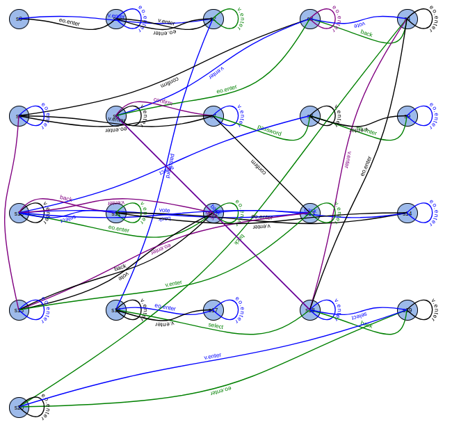
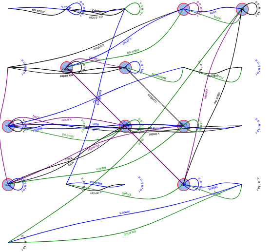

Given a system model, an environment model, and a safety property, the tool Fortis can be used for automated repair of a given system to improve its robustness against a set of intolerable deviations. It is a powerful generic tool but in this article, we look at Fortis from the lense of users. So we show an example of a system that is not robust against diverse user mistakes and show how Fortis can be used to generate a more robust design that addresses those user mistakes.
Note that, by user, we mean software industry. Because they are a major stakeholder for any software design repair tool.
A core motivation behind this work comes from - the idea of considering HCI aspects of programming to ensure that people will actually use them.
Demo - User prefers simple graphical solutions
Users prefer tools with little to no learning curve. That is why we designed our frontend in a manner that users are very accustomed with. They simply create a project and then upload project designs. Our model then robustifies the design and generates a report. So we can summarize user interaction in three simple tasks.
Create a project
Upload design files
Get report after Fortis generates redesigns.
You can see a demo of our tool here. file:../data/Example - Voting.mkv
Since the number of redesigns can be numerous, we show the solutions in a tab-like gui. User can exapnd the tabs to see the solutions. An example report can be seen here..
Case Study - Voting System
We will now look at the example of an e-voting system.
System Design
Following is the sys.lts for voting system from a high level of abstraction.
EM = (password -> P1),
P1 = (select -> P2),
P2 = (vote -> P3 | back -> P1),
P3 = (confirm -> EM | back -> P2).
The following is the UML diagram for it.
Environment
Following is the environment definition, albeit simplified from high level of abstraction.
ENV = (v.enter -> VOTER | eo.enter -> EO),
VOTER = (password -> VOTER1),
VOTER1 = (select -> VOTER2),
VOTER2 = (vote -> VOTER3 | back -> VOTER1),
VOTER3 = (confirm -> v.exit -> ENV | omit_confirm -> v.exit -> ENV | back -> VOTER2),
EO = (select -> EO | vote -> EO | confirm -> EO | back -> EO | eo.exit -> ENV).
And its UML diagram is:
While complex to look at, one can argue that the process flow itself is simple. So it can also be expressed via UML
Requirement
The FSP notation for requirement of voting is very simple. The one who enters the password and the one who gives the vote should be the same person.
const NoBody = 0
const Voter = 1
const EO = 2
range WHO = NoBody..EO
P = VOTE[NoBody][NoBody][NoBody],
VOTE[in:WHO][sel:WHO][v:WHO] = (
v.enter -> VOTE[Voter][sel][v] | eo.enter -> VOTE[EO][sel][v]
| password -> VOTE[in][sel][in]
| select -> VOTE[in][in][v]
| when (sel == v) confirm -> VOTE[in][NoBody][NoBody]
).
But its corresponding UML is simply not human.
Understanding Redesigns
You can see all the redesigns in the generated report here. We will now discuss on exactly what changed. As we try to navigate through them, the diagrams are very huge and often hard to comprehend. We tried using ChatGPT to assist us in understanding the graphs better. However, the responses were not helpful often. So while ChatGPT has the potential to sometimes give useful results for this task, it is not reliable due to the observed inconsistency in responses.
Since ChatGPT was not helpful, we decided to look at it from different angles. We found inspiration for it from Visualizing Formal Specification by Eunsuk Kang. In this ongoing undergrad project, they also agree that the built-in visualizations available in tools like Alloy, LTSA are not essentially helpful. A good diagram can help system analysts understand bugs, do better designs. With that in mind, we intend to show the redesigns through layers of abstractions.
For an automata, a force-directed graph layout is more suitable than a tree layout. Force-directed graphs help spread out nodes in a way that minimizes overlap and edge crossings, making it easier to visualize complex interconnections. We'll use D3.js to create an interactive force-directed graph.
Use cubic Bezier curves with two control points instead of quadratic Bezier curves with one control point.
Hierarchical View
We decided that the most populated nodes are the ones we should start looking from. So given a diagram, we try to find popular nodes. And this way, we try to create a general notion on what to look for, in the mind of the user.
The original diagram is:
The following diagram is achieved by placing states in grids. 
The below diagram is mapping between core nodes and the transitions. 
And the following gives a general notion of the graph.
User Oriented Approach
In this approach, user first segments the diagram into multiple parts using pen-and-paper tools i.e. xournal++. We use divide and conquer strategy for better comprehension of the diagram, since understanding big diagrams, like the following, is hard at a glance.  So we instead do this.
So we instead do this.
Results
- User oriented approach is recommended to inspect Fortis Generated Results
- Smallest diagram does capture sufficient details for understanding.

- All the other Fortis redesigns can be used as
User Scenarios to test the system design against.
- Cost is an important factor.
References